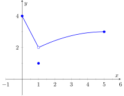
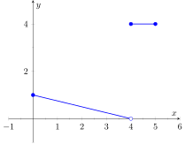
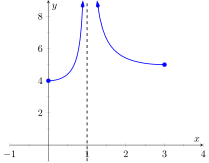
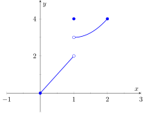
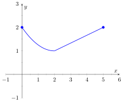
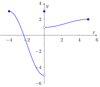
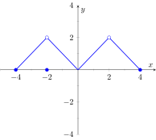
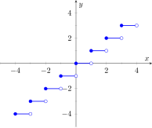

We introduced the concept of a limit gently, approximating their values graphically and numerically. Next came the rigorous definition of the limit, along with an admittedly tedious method for evaluating them. Section 1.3 gave us tools (which we call theorems) that allow us to compute limits with greater ease. Chief among the results were the facts that polynomials and rational, trigonometric, exponential and logarithmic functions (and their sums, products, etc.) all behave “nicely.” In this section we rigorously define what we mean by “nicely.”
In Section 1.1 we saw three ways in which limits of functions can fail to exist:
The function approaches different values from the left and right.
The function grows without bound.
The function oscillates.
In this section we explore in depth the concepts behind Item 1 by introducing the one-sided limit. We begin with formal definitions that are very similar to the definition of the limit given in Section 1.2, but the notation is slightly different and “\(x\neq c\)” is replaced with either “\(x\lt c\)” or “\(x \gt c\text{.}\)”
There is a slightly different definition for a left-hand limit, than for a right-hand limit, but both have a lot in common with Definition 1.2.1.
Definition1.4.1.One Sided Limits: Left- and Right-Hand Limits.
Left-Hand Limit
Let \(f\) be a function defined on \((a,c)\) for some \(a\lt c\) and let \(L\) be a real number. The statement that the limit of \(f(x)\text{,}\) as \(x\) approaches \(c\) from the left, is \(L\text{,}\) (alternatively, that the left-hand limit of \(f\) at \(c\) is \(L\)) is denoted by
and means that for any \(\varepsilon \gt 0\text{,}\) there exists \(\delta \gt 0\) such that for all \(x\in (a,c)\text{,}\) if \(\abs{x - c} \lt \delta\text{,}\) then \(\abs{f(x) - L} \lt \varepsilon\text{.}\)
Right-Hand Limit
Let \(f\) be a function defined on \((c,b)\) for some \(b \gt c\) and let \(L\) be a real number. The statement that the limit of \(f(x)\text{,}\) as \(x\) approaches \(c\) from the right, is \(L\text{,}\) (alternatively, that the right-hand limit of \(f\) at \(c\) is \(L\)) is denoted by
and means that for any \(\varepsilon \gt 0\text{,}\) there exists \(\delta \gt 0\) such that for all \(x\in (c,b)\text{,}\) if \(\abs{x - c} \lt \delta\text{,}\) then \(\abs{f(x) - L} \lt \varepsilon\text{.}\)
Practically speaking, when evaluating a left-hand limit, we consider only values of \(x\) “to the left of \(c\text{,}\)” i.e., where \(x\lt c\text{.}\) The admittedly imperfect notation \(x\to c^-\) is used to imply that we look at values of \(x\) to the left of \(c\text{.}\) The notation has nothing to do with positive or negative values of either \(x\) or \(c\text{.}\) It's more like you are adding very small negative values to \(c\) to get values for \(x\text{.}\) A similar statement holds for evaluating right-hand limits; there we consider only values of \(x\) to the right of \(c\text{,}\) i.e., \(x \gt c\text{.}\) We can use the theorems from previous sections to help us evaluate these limits; we just restrict our view to one side of \(c\text{.}\)
We practice evaluating left- and right-hand limits through a series of examples.
Example1.4.2.Evaluating one-sided limits.
Let \(f(x) = \begin{cases}
x \amp 0\leq x\leq 1 \\
3-x \amp 1\lt x\lt 2
\end{cases}\text{,}\) as shown in Figure 1.4.3. Find each of the following:
For these problems, the visual aid of the graph is likely more effective in evaluating the limits than using \(f\) itself. Therefore we will refer often to the graph.
As \(x\) goes to \(1\)from the left, we see that \(f(x)\) is approaching the value of \(1\text{.}\)
As \(x\) goes to \(1\)from the right, we see that \(f(x)\) is approaching the value of \(2\text{.}\) Recall that it does not matter that there is an “open circle” there; we are evaluating a limit, not the value of the function.
The limit of \(f\) as \(x\) approaches \(1\) does not exist, as discussed in Section 1.1. The function does not approach one particular value, but two different values from the left and the right.
Using the definition, and by looking at the graph, we see that \(f(1) = 1\text{.}\)
As \(x\) goes to \(0\) from the right, we see that \(f(x)\) is approaching \(0\text{.}\) Therefore \(\lim_{x\to 0^+} f(x)=0\text{.}\) Note we cannot consider a left-hand limit at \(0\) as \(f\) is not defined for values of \(x\lt 0\text{.}\)
Using the definition and the graph, \(f(0) = 0\text{.}\)
As \(x\) goes to \(2\) from the left, we see that \(f(x)\) is approaching the value of \(1\text{.}\)
The graph and the definition of the function show that \(f(2)\) is not defined.
Note how the left- and right-hand limits were different at \(x=1\text{.}\) This, of course, causes the limit to not exist. The following theorem states what is fairly intuitive: the limit exists precisely when the left- and right-hand limits are equal.
Theorem1.4.4.Limits and One-Sided Limits.
Let \(f\) be a function defined on an open interval \(I\) containing \(c\text{.}\) Then
\begin{equation*}
\lim_{x\to c}f(x) = L
\end{equation*}
if, and only if,
\begin{equation*}
\lim_{x\to c^-}f(x) = L \text{ and } \lim_{x\to c^+}f(x) = L\text{.}
\end{equation*}
The phrase “if, and only if” means the two statements are equivalent: they are either both true or both false. If the limit equals \(L\text{,}\) then the left and right hand limits both equal \(L\text{.}\) If the limit is not equal to \(L\text{,}\) then at least one of the left and right-hand limits is not equal to \(L\) (it may not even exist).
One thing to consider in Examples 1.4.2-Example 1.4.9 is that the value of the function may/may not be equal to the value(s) of its left/right-hand limits, even when these limits agree.
Example1.4.5.Evaluating limits of a piecewise-defined function.
Let \(f(x) =\begin{cases}
2-x \amp 0\lt x\lt 1 \\
(x-2)^2 \amp 1\lt x\lt 2
\end{cases}\) . Evaluate the following:
In this example, we evaluate each expression using just the definition of \(f\text{,}\) without using a graph as we did in the previous example.
As \(x\) approaches \(1\) from the left, we consider a limit where all \(x\)-values are less than \(1\text{.}\) This means we use the “\(2-x\)” piece of the piecewise-defined function \(f\text{.}\) As the \(x\)-values near \(1\text{,}\)\(2-x\) approaches \(1\text{;}\) that is, \(f(x)\) approaches \(1\text{.}\)
Therefore \(\lim\limits_{x\to 1^-} f(x)=1.\)
A concise mathematical presentation of the above argument could be written as follows:
As \(x\) approaches \(1\) from the right, we consider a limit where all \(x\)-values are greater than \(1\text{.}\) This means we use the “\((x-2)^2\)” piece of \(f\text{.}\) As the \(x\)-values near \(1\text{,}\)\((x-2)^2\) approaches \(1\text{;}\) that is, we see that again \(f(x)\) approaches \(1\text{.}\)
The limit of \(f\) as \(x\) approaches \(1\) exists and is \(1\text{,}\) as \(f\) approaches \(1\) from both the right and left.
Therefore \(\lim\limits_{x\to 1} f(x)=1\text{.}\)
Neither piece of \(f\) is defined for the \(x\)-value of \(1\text{;}\) in other words, \(1\) is not in the domain of \(f\text{.}\) Therefore \(f(1)\) is not defined.
As \(x\) approaches \(0\) from the right, we consider a limit where all \(x\)-values are greater than \(0\text{.}\) This means we use the \(2-x\) piece of \(f\text{.}\) As the \(x\)-values near \(0\text{,}\)\(2-x\) approaches \(2\text{;}\) that is, \(f(x)\) approaches \(2\text{.}\)
So \(\lim\limits_{x\to 0^+} f(x)=2\text{.}\)
\(f(0)\) is not defined as \(0\) is not in the domain of \(f\text{.}\)
As \(x\) approaches \(2\) from the left, we consider a limit where all \(x\)-values are less than \(2\text{.}\) This means we use the \((x-2)^2\) piece of \(f\text{.}\) As the \(x\)-values near \(2\text{,}\)\((x-2)^2\) nears \(0\text{;}\) that is, \(f(x)\) approaches \(0\text{.}\)
So \(\lim\limits_{x\to 2^-} f(x)=0\text{.}\)
\(f(2)\) is not defined as \(2\) is not in the domain of \(f\text{.}\)
We can confirm our analytic result by consulting the graph of \(f\) shown in Figure 1.4.6. Note the open circles on the graph at \(x=0\text{,}\)\(1\) and \(2\text{,}\) where \(f\) is not defined.
It is clear by looking at the graph that both the left- and right-hand limits of \(f\text{,}\) as \(x\) approaches \(1\text{,}\) are \(0\text{.}\) Thus it is also clear that the limit is \(0\text{;}\) i.e., \(\lim_{x\to 1} f(x) = 0\text{.}\) It is also clearly stated that \(f(1) = 1\text{.}\)
Example1.4.9.Evaluating limits of a piecewise-defined function.
Let \(f(x) = \begin{cases} x^2 \amp 0\leq x\leq 1 \\ 2-x \amp 1\lt x\leq 2
\end{cases}\) as shown in Figure 1.4.10. Evaluate the following:
Only in Example 1.4.9 do both the function and the limit exist and agree. This seems “nice;” in fact, it seems “normal.” This is in fact an important situation which we explore in Section 1.5 entitled “Continuity.” In short, a continuous function is one in which when a function approaches a value as \(x\to c\) (i.e., when \(\lim_{x\to c} f(x) = L\)), it actually attains that value at \(c\text{.}\) Such functions behave nicely as they are very predictable.
ExercisesExercises
Terms and Concepts
1.
What are the three ways in which a limit may fail to exist?
2.
True
False
If \(\lim\limits_{x\to 1^-}f(x)=5\text{,}\) then \(\lim\limits_{x\to 1}f(x)=5\text{.}\)
3.
True
False
If \(\lim\limits_{x\to 1^-}f(x)=5\text{,}\) then \(\lim\limits_{x\to 1^+}f(x)=5\text{.}\)
4.
True
False
If \(\lim\limits_{x\to 1}f(x)=5\text{,}\) then \(\lim\limits_{x\to 1^-}f(x)=5\text{.}\)
Problems
Exercise Group.
Evaluate each expression using the given graph of \(f\text{.}\)
5.

\(\displaystyle \lim\limits_{x\to 1^-} f(x)\)
\(\displaystyle \lim\limits_{x\to 1^+} f(x)\)
\(\displaystyle \lim\limits_{x\to 1} f(x)\)
\(\displaystyle f(1)\)
\(\displaystyle \lim\limits_{x\to 0^-} f(x)\)
\(\displaystyle \lim\limits_{x\to 0^+} f(x)\)
6.

\(\displaystyle \lim\limits_{x\to 4^-} f(x)\)
\(\displaystyle \lim\limits_{x\to 4^+} f(x)\)
\(\displaystyle \lim\limits_{x\to 4} f(x)\)
\(\displaystyle f(4)\)
\(\displaystyle \lim\limits_{x\to 0^-} f(x)\)
\(\displaystyle \lim\limits_{x\to 0^+} f(x)\)
7.

\(\displaystyle \lim\limits_{x\to 1^-} f(x)\)
\(\displaystyle \lim\limits_{x\to 1^+} f(x)\)
\(\displaystyle \lim\limits_{x\to 1} f(x)\)
\(\displaystyle f(1)\)
\(\displaystyle \lim\limits_{x\to 3^-} f(x)\)
\(\displaystyle \lim\limits_{x\to 0^+} f(x)\)
8.

\(\displaystyle \lim\limits_{x\to 1^-} f(x)\)
\(\displaystyle \lim\limits_{x\to 1^+} f(x)\)
\(\displaystyle \lim\limits_{x\to 1} f(x)\)
\(\displaystyle f(1)\)
9.

\(\displaystyle \lim\limits_{x\to 2^-} f(x)\)
\(\displaystyle \lim\limits_{x\to 2^+} f(x)\)
\(\displaystyle \lim\limits_{x\to 2} f(x)\)
\(\displaystyle f(2)\)
10.

\(\displaystyle \lim\limits_{x\to 0^-} f(x)\)
\(\displaystyle \lim\limits_{x\to 0^+} f(x)\)
\(\displaystyle \lim\limits_{x\to 0} f(x)\)
\(\displaystyle f(0)\)
11.

\(\displaystyle \lim\limits_{x\to -2^-} f(x)\)
\(\displaystyle \lim\limits_{x\to -2^+} f(x)\)
\(\displaystyle \lim\limits_{x\to -2} f(x)\)
\(\displaystyle f(-2)\)
\(\displaystyle \lim\limits_{x\to 2^-} f(x)\)
\(\displaystyle \lim\limits_{x\to 2^+} f(x)\)
\(\displaystyle \lim\limits_{x\to 2} f(x)\)
\(\displaystyle f(2)\)
12.

Let \(a\) be an integer with \(-3\leq a\leq3\text{.}\)
\(\displaystyle \lim\limits_{x\to a^-} f(x)\)
\(\displaystyle \lim\limits_{x\to a^+} f(x)\)
\(\displaystyle \lim\limits_{x\to a} f(x)\)
\(\displaystyle f(a)\)
Exercise Group.
Evaluate the given limits of the piecewise defined function.
13.
\(f(x) ={\begin{cases}\displaystyle{x-1}\amp \text{if}\ x \le 3\cr
\displaystyle{x^{2}-3}\amp \text{if}\ x > 3\end{cases}}\)
\(\displaystyle \lim\limits_{x\to 3^-} f(x)\)
\(\displaystyle \lim\limits_{x\to 3^+} f(x)\)
\(\displaystyle \lim\limits_{x\to 3} f(x)\)
\(\displaystyle f(3)\)
14.
\(f(x) ={\begin{cases}\displaystyle{2x-2x^{2}-5}\amp \text{if}\ x \lt 3\cr
\displaystyle{\sin\!\left(x-3\right)}\amp \text{if}\ x \ge 3\end{cases}}\)
\(\displaystyle \lim\limits_{x\to 3^-} f(x)\)
\(\displaystyle \lim\limits_{x\to 3^+} f(x)\)
\(\displaystyle \lim\limits_{x\to 3} f(x)\)
\(\displaystyle f(3)\)
15.
\(f(x) ={\begin{cases}\displaystyle{x^{2}+3x-1}\amp \text{if}\ x \lt 2\cr
\displaystyle{x^{3}+1}\amp \text{if}\ 2 \le x \le 5\cr
\displaystyle{x^{2}+4x+81}\amp \text{if}\ x > 5\end{cases}}\)